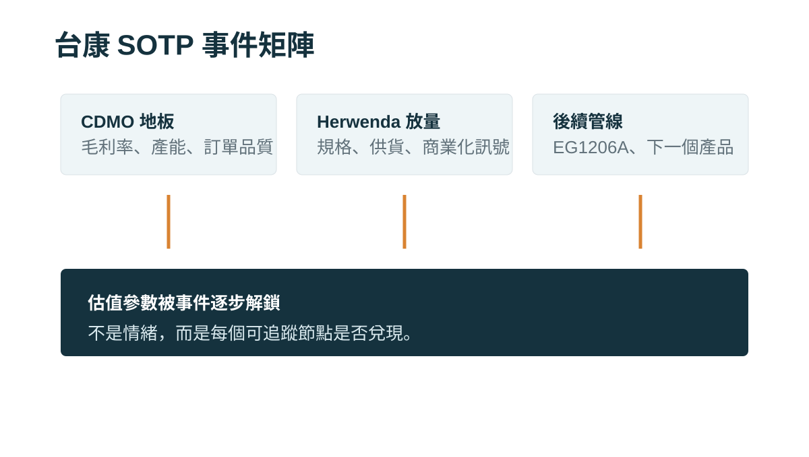

台康生技最有趣的地方，不是它像不像一支新藥股，而是它剛好站在台灣生技最容易被錯估的位置。
它有 CDMO 製造能力，所以市場會忍不住用營收、毛利率、產能利用率看它。
它也有 trastuzumab biosimilar EG12014，也就是歐洲已核准的 Herwenda，所以市場又會忍不住把它當成有國際授權夥伴、有上市產品選擇權的生技公司。

不是市場沒看到，而是不知道怎麼定價
台康仍然虧損，營收也還不穩。於是它常常被放在一個尷尬的位置：用製造業看，獲利還不夠成熟；用新藥股看，又沒有一個可以用高峰銷售直接全額折現的原創新藥故事。
這就是錯配的來源。
第一層：CDMO 是估值地板
如果只有 CDMO，台康的估值彈性有限。
但如果 CDMO 能和 Herwenda 商業化連在一起，它就不只是代工能力，而是把產品選擇權轉成現金流的基礎設施。
第二層：Herwenda 是重新定價開關
trastuzumab biosimilar 的競爭，本質上不是「有沒有藥證」而已。
當市場上已經有多個 biosimilar，真正影響採用速度的，會變成價格、供應穩定、品牌信任、醫院切換成本，以及產品規格是否能貼近臨床工作流程。

第三層：後續管線決定平台估值
平台估值不是公司自己說了算，而是市場看到第二個、第三個產品也能複製開發、製造、送件、授權流程後，才會逐步給出溢價。
台康不是一句「便宜」或「貴」能講完。它是一支需要追事件、追放量、追分潤可見度的公司。
本文僅供產業研究與知識分享，不構成投資、醫療、募資或個股建議。